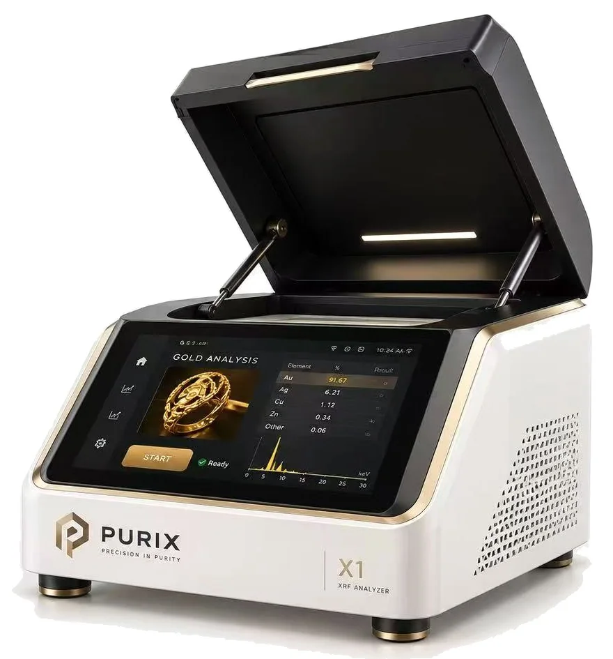
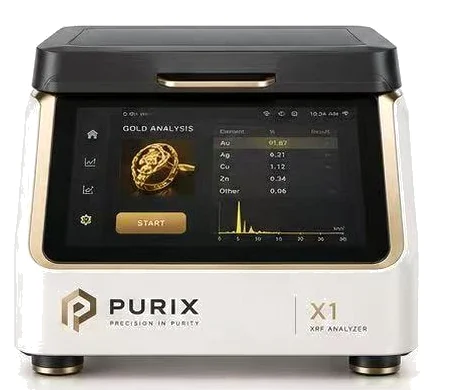
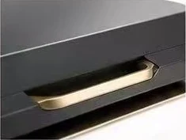
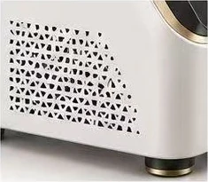

Ayar tahmin edilmez.
Ölçülür.
PURIX X1, altının içindeki her elementi 30 saniyede ve parçaya dokunmadan yüzde yüzüne raporlar. Kesme yok, mihenk yok, asit yok.

- Hassasiyet
- ±0,03 %
- Ölçüm süresi
- 30 sn
- Numuneye etkisi
- Yok
- Element aralığı
- S – U
Au, X1 PRO ile
Numune başına
Kesme, kazıma, asit yok
Au, Ag, Pt, Pd, Cu, Zn, Ni…
Mihenk taşı yorumlar.
Asit yüzeye bakar.
XRF sayar.
Hurda alımında yarım ayarlık bir yanılgı, gram başına gerçek bir kayıptır. Üç yöntemi aynı ölçütlerle yan yana koyduk.
| Ölçüt | Mihenk taşı | Asit testi | PURIX XRF |
|---|---|---|---|
| Parçaya etkisi | Çizik bırakır | Yüzeyi aşındırır | Dokunmaz |
| Sonuç | Göz kararı ayar | Ayar aralığı (ör. 14–18) | Her elementin yüzdesi |
| Süre | 1–2 dakika | 2–5 dakika | 30 saniye |
| Kaplama tespiti | Hayır | Sınırlı | Uyarı verir |
| Kayıt | Yok | Yok | PDF ve fiş raporu |
Otuz saniyede ne oluyor?
- 1
Uyarma
Tüp, numuneye düşük güçlü X-ışını gönderir. Kapak kapanmadan tüp çalışmaz.
- 2
Floresans
Her element kendine özgü enerjide ikincil ışın yayar: altın 9,71 keV'de, gümüş 22,16 keV'de.
- 3
Sayım
Dedektör bu ışınları sayar; yazılım tepeleri oranlara çevirir ve ayarı hesaplar.
Bir numune seçin,
sonucu görün.
Bu ekran X1'in arayüzünü taklit eder. Spektrumdaki her tepe bir elementtir; tepenin yüksekliği o elementin miktarını gösterir.
Numune
| Element | % | Oran |
|---|
X1 serisi
Aynı gövde, aynı arayüz, aynı servis ağı. Ölçtüğünüz malzemeye göre üç dedektör sınıfından birini seçin.

Üç modeli yan yana karşılaştır
Tüm modellerde: 50 kV mikro odaklı X-ışını tüpü, HD numune kamerası, kapak emniyet kilidi, 10,1″ dokunmatik ekran ve dahili bilgisayar, 100–240 V.
Vitrinin yanında durmak için tasarlandı.
Çoğu analiz cihazı arka odaya saklanır. X1, ölçümü müşterinin gözü önünde yapmanız için tasarlandı: sonuç ekranı müşteriye döner, güveni rakam kurar.
- Gövde
- Porselen beyazı toz boya, fırçalanmış şampanya altın çerçeve
- Kapak
- Gazlı amortisör; açık kalır, sessiz kapanır
- Soğutma
- Yan yüzeyde üçgen desenli pasif hava kanalları


Radyasyon güvenliği
Kapak açıldığı anda tüp kapanır. Gövde yüzeyinde ölçülen doz 1 µSv/sa altındadır. Ülkenizde gereken radyasyon lisansı için teknik dosyayı biz sağlarız.
Altının el değiştirdiği her yerde.
Sektörünüzü bulun; hangi modelle başlamanız gerektiği yanında yazıyor.
Kuyumcular
Hurda alımında ayarı müşterinin önünde ölçün, fiyatı rakamla savunun.
X1Rehin ve altın kredisi
Teminata alınan her parçanın ölçüm raporunu dosyaya ekleyin; kaplama riskini masada yakalayın.
X1Külçe ve sikke
Külçe ve yatırımlık sikkeleri ambalajından çıkarmadan kontrol edin.
X1Rafineriler
Giriş malzemesini ve çıkış külçesini aynı cihazla doğrulayın, safsızlıkları takip edin.
X1 PROToptancı ve atölyeler
Alaşım reçetesini üretim öncesi ve sonrası doğrulayın; beyaz altında paladyumu ölçün.
X1 PROAyar evleri ve laboratuvarlar
Çok kolimatörlü ölçümle küçük parçalarda bile ±0,01 % tekrarlanabilirlik.
X1 LAB
Cihazı teslim etmek işin başlangıcı.
Kurulumdan kalibrasyona kadar her adımda yerel iş ortağımız ve merkez teknik ekibimiz yanınızda.
Servis ekibiyle görüşünYerinde kurulum ve eğitim
Teslimat sonrası kurulum, personel eğitimi ve ilk kalibrasyon fiyata dahil.
Lisans desteği
Ülkenizdeki radyasyon lisansı veya kaydı için teknik dosya ve doz ölçüm raporu.
2 yıl garanti
X-ışını tüpü ve dedektör dahil. İsteğe bağlı uzatılmış garanti.
48 saatte müdahale
Uzaktan bağlantıyla ilk teşhis; gerekirse yedek cihaz.
Referans standartlar
8, 14, 18, 22 ve 24 ayar kalibrasyon seti cihazla birlikte gelir.
Satın almadan önce sorulanlar
XRF, mihenk taşı ve asitle kıyaslandığında ne kadar güvenilir?
Mihenk taşı ustanın gözüne, asit testi yalnızca yüzeye bağlıdır. XRF her elementin oranını sayısal olarak verir, sonuç tekrarlanabilir ve parçaya hiçbir şekilde zarar vermez.
Altın kaplı ya da içi dolgulu parçaları yakalar mı?
X1, yüzey alaşımı beklenen alaşımla tutarsız olduğunda uyarı verir. Kalın kaplama ve tungsten dolgu şüphesinde X1 PRO'nun kaplama modu ve birden fazla noktadan ölçüm önerilir.
Cihaz radyasyon yayar mı, lisans gerekir mi?
Tüp yalnızca kapak kapalıyken çalışır; gövde yüzeyindeki doz doğal fon seviyesine yakındır. Çoğu ülkede X-ışını cihazları için ulusal radyasyon otoritesinden lisans veya kayıt gerekir; başvuru için gereken teknik dosyayı sağlıyoruz.
Teslimat ve kurulum ne kadar sürer?
Stoktaki modeller siparişten sonra 5–10 iş günü içinde gönderilir. Kurulumu yerel iş ortağımız yapar; personel eğitimi yaklaşık 2 saat sürer.
Hangi ödeme ve kiralama seçenekleri var?
Peşin ödeme, akreditif (L/C) ve bazı ülkelerde iş ortaklarımız üzerinden kiralama. Tercihinizi teklif formunda belirtin.
Teklifinizi hazırlayalım.
Formu doldurun, bir iş günü içinde işletmenize uygun model ve fiyatla dönelim. İsterseniz cihazı işyerinizde, kendi altınlarınızla deneyin.
- Ülke
- @purixxrf.tr
- +90 500 000 00 00
- E-posta
- info@purix.com.tr
- Merkez
- İstanbul, Türkiye
- Çalışma saatleri
- Hafta içi 09.00–18.30 (GMT+3)
Teklif talebiniz alındı
Bir iş günü içinde sizinle iletişime geçeceğiz.